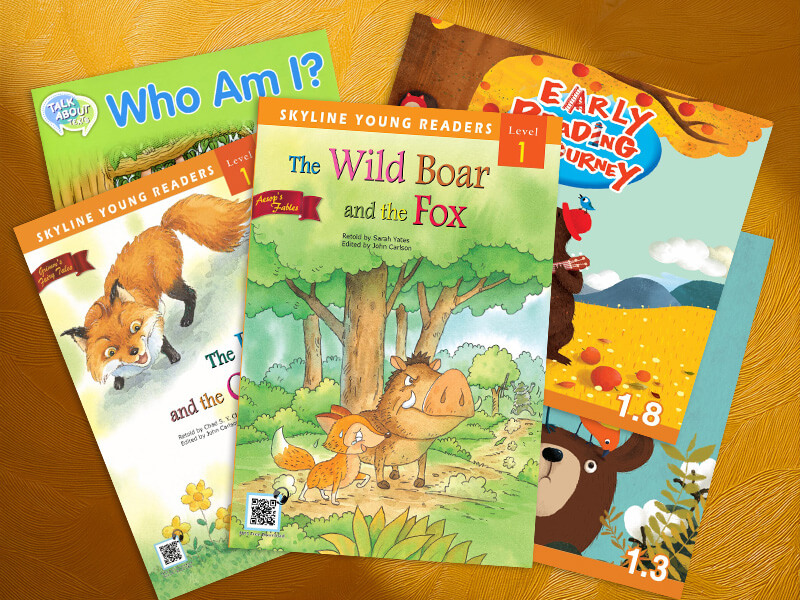

Tina Hong
經歷：內容設計與影片剪裁專業人員，擁有多年經驗，善於編輯簡報、講義教學資料、展示型影片制作與網頁內容組織。
經歷：內容設計與影片剪裁專業人員，擁有多年經驗，善於編輯簡報、講義教學資料、展示型影片制作與網頁內容組織。
正式擁有內容設計與影片剪裁經驗，開始獨立展示個人經歷。
發表多篇個人工作與範例，推廣成果。
2023年度達成147%，2024年度達成144%，成功降低流失率。

負責腳本計劃、錄音區節、影片製作
進一步提升錄製效率。
獨立腳本策劃，錄音，操錄、影片制作，全線提升清楚度。
策劃書籍推廣動畫，實擊設計與影片製作。
校對超過一百本英文讀本，確保文字正確與音質一致。
